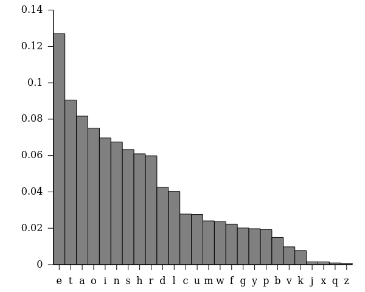
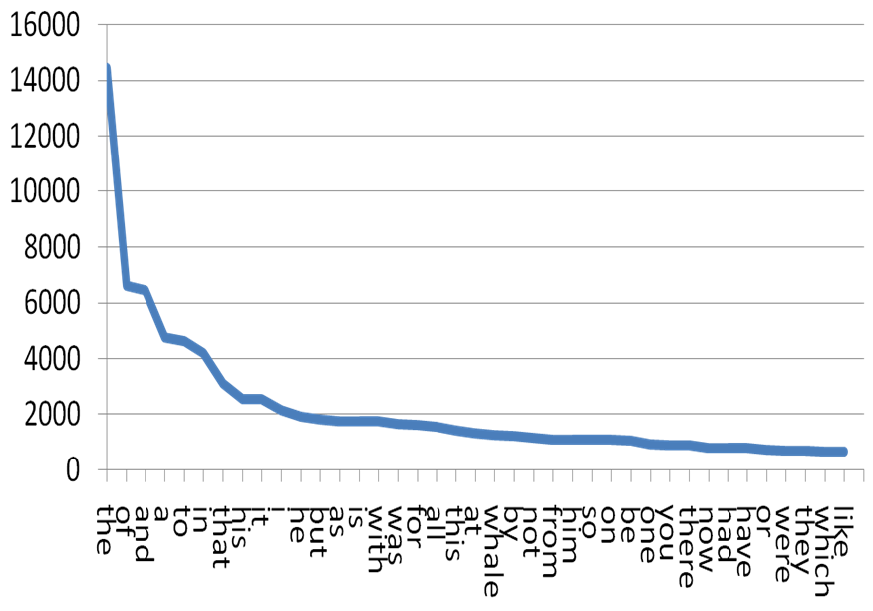

[verbal] language is the main vehicle of human comunication
until short ago, the main encoding of data/knowledge
languages represent what we value and [seems to] determine what we can think.
universal grammars are studied.
complex grammars: a sign of affectation?
terms are ambiguos by design
From the British Medical Journal:
Organ specific immune-related adverse events are uncommon with anti-PD-1 drugs but the risk is increased compared with control treatments. General adverse events related to immune activation are largely similar. Adverse events consistent with musculoskeletal problems are inconsistently reported but adverse events may be common.
From Men’s Health:
The stats don’t lie… here’s how to get the looks of her dreams
Love is in the eye of the beholder.
But good looks are down to science… sort of.
Ah, the chest. The part of the body most men would like to grow. Luckily, you have come to the right place. We really do know a thing or two about building muscle. Take your pick from the workouts below to stretch your chest.
Often text (document) analysis begins with word occurrence analysis: we record word usage irrespective of the position in text.
Let a document be a bag of words. Let a corpus be a collection of documents.
The occurence matrix A:
\(a_{ij} = k\)
means that word \(i\) appears \(k\) times in document \(j.\)
Word \(i\) is represented by the \(i\)-th row of A (also \(A^T_i\))
With row normalisation, word usage becomes a prob. distribution to which Entropy analysis can be applied.
With column norm., we analyse a document by its entropy.
In languages, the occurrence of symbols is statistically imbalanced:

Zipf’s law: if the most frequent word appears k times, then the \(i\)-th word by freq. appears \(\frac{k}{i}\) times.
low-frequency characters have high information entropy
similarly, low-frequency words have high information entropy: they tell more about the underlying topic of the document
A simpler application of Entropy is text compression
A collection of documents taken to be representative of the target language
Encoding compressed from \(\log_2 27 \approx 4.75\) to \(H[Pr[l_i]]\approx 4.22\)
Further comp. by taking 2- and 3-grams: sequences of 2 or 3 characters.
The 3-gram ent appears more often than uzb.
| Char. | Freq. | Encoding |
|---|---|---|
| z | .007 | 0 |
| q | .009 | 1 |
| Char. | Freq. | Encoding |
|---|---|---|
| z | .007 | 10 |
| q | .009 | 11 |
| x | .15 | 0 |
| Char. | Freq. | Encoding |
|---|---|---|
| z | .007 | 110 |
| q | .009 | 111 |
| x | .15 | 10 |
| j | .153 | 0 |
| Char. | Freq. | Encoding |
|---|---|---|
| z | .007 | 1…10 |
| … | … | … |
| t | 9.05 | 10 |
| e | 12.72 | 0 |
Huffmann algorithm: frequency-based letter encoding
Optimal wrt. the theoretical lower-bound H.
coding is prefix-free: no code is the prefix of another
greedy algorithm: cost grows with \(n\log n\)
Instance:
a collection of N documents
a query ([set of ]keyword[s])
Solution:
text documents
keyword-based ranking (doc. is a bag of words)

Rank documents on the basis of the frequence of the keyword in each
Euristics: At same frequency, choose those where the keyword appears earlier
For low-frequency (high-Entropy) terms simple relative frequencies work: eliminate stopwords
\(TF(q_i, d_j) = \frac{|q_i\in d_j|}{MAX{|q_x\in d_j}|}\)
A query term \(q_i\) is specific in inverse relation to the number of documents in which it occurs
N documents, \(n(q_i)\) of which contain \(q_i\).
\[IDF(q_i) = \log \frac{N}{n(q_i)}\]
The standard empirical measure for IR ranking
\[TFIDF(q_i, d_j, C) = TF(q_i, d_j) \cdot IDF(q_i, C)\]
For frequent terms (after stopwords) we can smooth \(IDF(q_i, C)\) to \(\log (1+ \frac{N}{n(q_i)})\)
the context and its frequency guides the labelling of words.
Named-Entity recognition (NER)
follows POS
A group of words are recognized as naming a worldy object or a stand-alone concept.